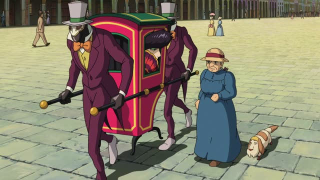
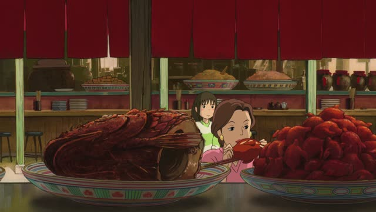
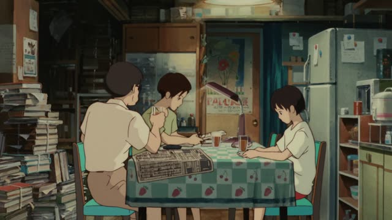
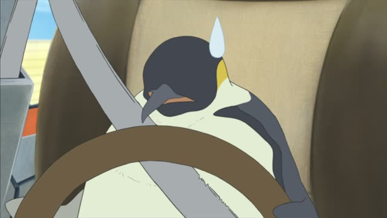
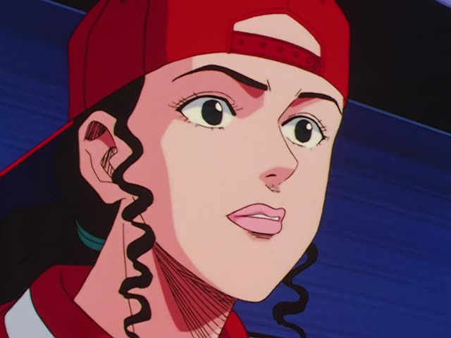
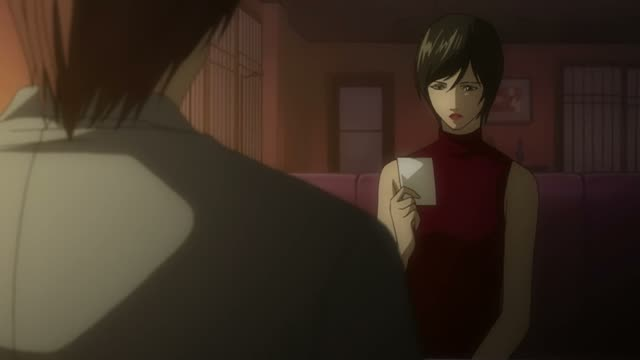
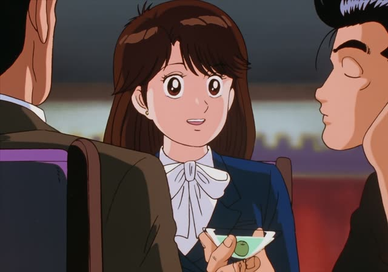
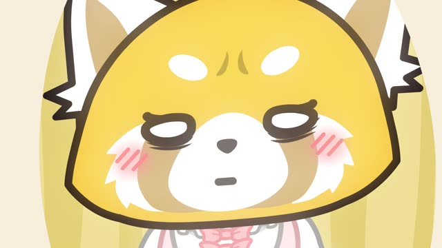
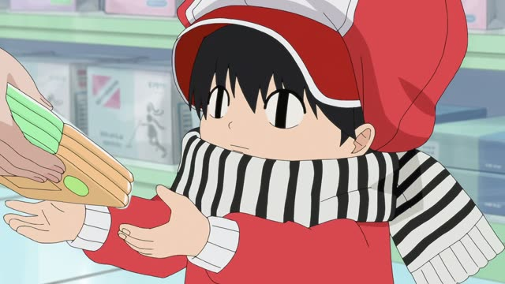
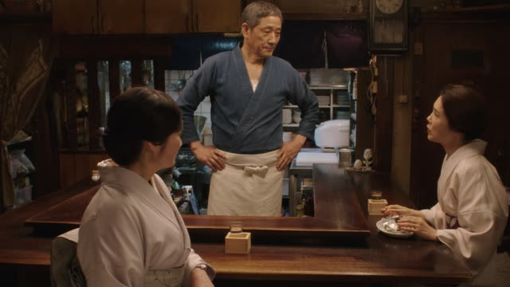

かしら
Nothing to add, not even after a noun: no だ before かしら.
| Word | Add | Ending | ||
|---|---|---|---|---|
| Noun | 学生 | – | かしら | I wonder if he's a student |
| な-adjective | 静か | – | かしら | I wonder if it's quiet |
| Verb | 行く | – | かしら | I wonder if he'll go |
| い-adjective | 高い | – | かしら | I wonder if it's expensive |

Howl's Moving Castle
ハウル 元気かしら?
"I wonder how Howl is doing?"
かしら means "I wonder": you ask yourself out loud more than you ask anyone. It does the same job as かな, just softer, and you hear it mostly from women and older speakers.
It goes at the very end with nothing added, even after a noun or a な-adjective: 元気かしら, never 元気だかしら. On this card, the Witch of the Waste asks Sophie about Howl in a sweet, wondering voice.
Most men today say かな instead. Same meaning, different voice.

Spirited Away
これ 何ていう鳥かしら？
"What kind of bird is this, I wonder?" [eating at a food stall]
After a question word (何, どこ, 誰) かしら turns the question into wondering. On this card, Chihiro's mom is eating at a stall and wonders what bird she's got.
Quick Examples
Your friend is late and not answering.
道に迷ったのかしら。
"I wonder if she got lost."
のかしら: wondering about the story behind it.
CasualTrying on two dresses in a shop.
こっちの方がいいかしら。
"Maybe this one's better?"
CasualLooking at a dark sky in the evening.
明日は雨かしら。
"I wonder if it'll rain tomorrow."
After a noun, no だ.
CasualWith and without
雨が降る。
It's going to rain. You say it as a fact.
雨が降るかしら。
Will it rain, I wonder? You're thinking out loud.
Examples from Media

Whisper of the Heart
やっぱり ノートワープロ 買おうかしら。
"Maybe I'll buy a laptop word processor after all."
After the let's-form (買おう), かしら means "maybe I'll...": thinking about doing it.

Shirokuma Cafe · Episode 7
爪 痛かったかしら
"Did my claws hurt, I wonder?"
After a past form: wondering about something that already happened.

Slam Dunk · Episode 44
大丈夫かしら 三井先輩
"I wonder if Mitsui is okay."
大丈夫かしら: the classic worried "I hope they're okay".

Death Note · Episode 34
本当かしら
"I wonder if that's true."
After a noun, nothing added: 本当かしら.

Oishinbo · Episode 10
どんなお料理が出るのかしら
"I wonder what kind of food they'll serve."
のかしら works like のかな: wondering about something you can't see yet.

Aggretsuko · Season 2, Episode 1
緊張してるのかしらね
"Maybe he's nervous."
ね at the end shares the guess with the person next to you.

Kotaro Lives Alone · Episode 1
はい これでいいかしら？
"Here, will this do?"
これでいいかしら: a soft way to check "is this okay?". A shop clerk handing over tissues.

Midnight Diner: Tokyo Stories · Season 2, Episode 6
マスター どこか いい理容室ないかしら
"Master, I wonder if there's a good barber around here."
～ないかしら: a soft way to ask for something, "isn't there...?".